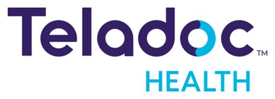

Associate Software Engineer
I am on the Single Eligibility Services (SES) team. SES maintains the backend services that work out which healthcare programs and services a member can use, based on the benefits and coverage provided by their employer or health plan. Registration and enrollment experiences rely on these answers.
I was selected as a Pathfinder in the inaugural cohort of Teladoc Health's Junior Engineering Program. As one of the first engineers through the program, I am helping shape it for future early-career engineers.
- Develop and maintain Ruby on Rails APIs for member search, identity matching, and benefit and coverage data.
- Add RSpec coverage, refine API behavior, and resolve linting issues to keep services reliable and maintainable.
- Work on Ruby runtime and container upgrades, Docker-based development environments, and Jenkins pipelines.
- Built the first version of a parameterized Jenkins pipeline that generates test members and coverage scenarios for QA and integration testing.
- Debug Kafka event processing and data integration issues with engineers, QA, and product partners in an Agile team.